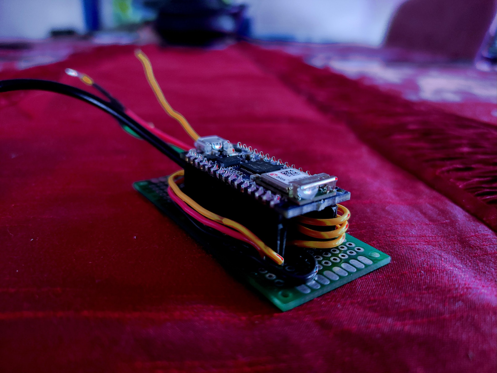
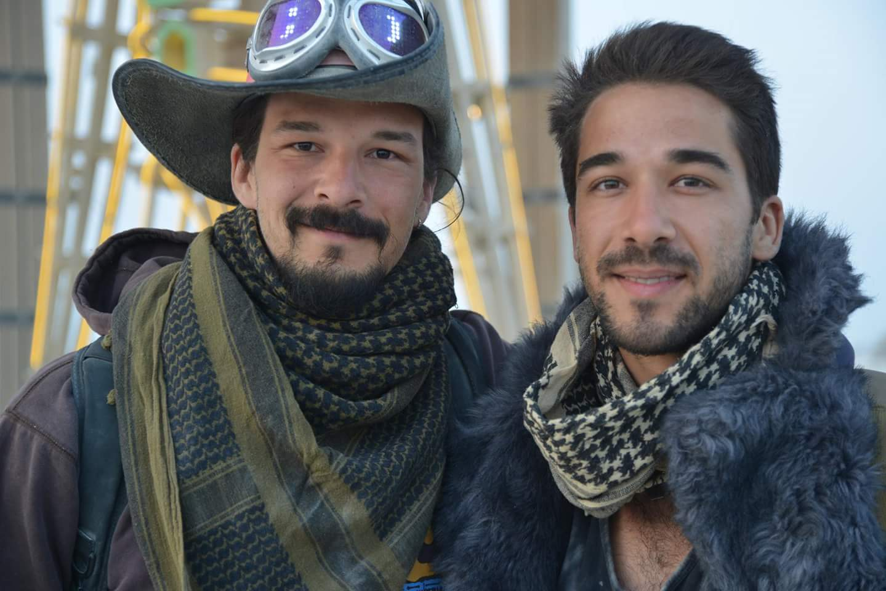
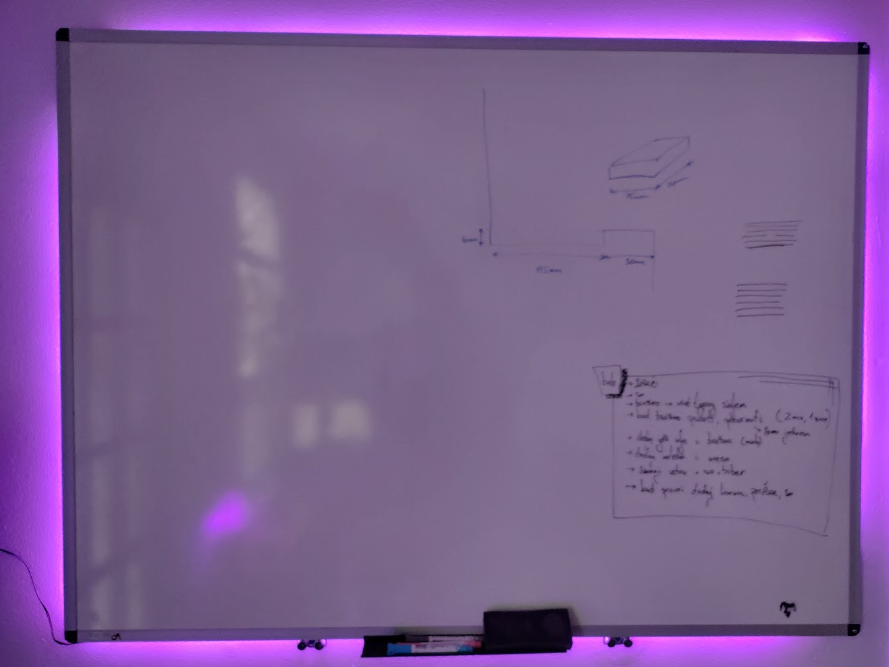

Bad Idea Engineering
We are just going to pass through your life and make it just a little bit more better before we turn back to inconveniencing very large groups of electrons.
Littl3.1 is rooted in profound laziness and relentless pursuit of the ghost of reason. Yet, no credit can be taken for any of it. It's a gift really. Few possess it. Here, at Littl3.1 Engineering, it is aimed directly at evolutionary and technological advance of our species by being deliberately and meticulously selective.
As a result, most of what happens here is a series of single-servings of sheer genius, ambitious prototyping, one_of_a_kind designs and tranquil determination.
Now, tell us, how can we make your life even more awesome?
Prim3 LED

Your cyber_virtual_presence meetings of talking heads are made dull by boring background of a gray wall and you refuse to use a sandy beach green-screen insert; You think that blurred background was cool back in 2009; You want to shine in your authentic way.
Attach this littl3 nugget to a LED strip, fire up our app and awe your viewers with creative visuals and certain distraction. If that's not your stride, you can tuck a similar rig under your bed frame or on top of cabinets for accent lighting. Either way, the results are shining.
Emoji Goggl3s

Right, so you got yourself some nice goggles and you really want to see absolutely nothing out of them. Why not stuff them full of LEDs, copper and lithium? Then, all you need is a helmet or a hat to attach them to and you'll have a very unique headlamp for your next camping trip.
That is exactly what has happened here. Arranged in a peculiar order and with a little bit of initiative, the LEDs in the goggles can be made to display anything from your current facebook status to your favorite crypto value. We chose to render a randomly selected expression from a collection of ASCII emojis on a random timer. These goggles are a great conversation piece, a source of light and endless amusement.
H3x Tent Lighting
Candles, flood lights, kerosine lamps and even the common smart bulbs have already been outdated. On the cutting edge of technology, we want something more. We want lighting capable of being a VU meter when occasion calls for a rager. We want to be able to feel the flicker of campfire or experience blue skies... why not have it all?
This event lighting project spanned over 3000 utlra_bright LEDs, contained over a kilometer of wires and survived some very extreme weather conditions. Several predefined lighting patterns allowed the overall lighting system to provide mood lighting or responsive music lighting depending on need or occassion. For those of you who might be concerned about polar bears, you can rest easy knowing that this entire setup was powered by 750W power supply but averaged around 300W mark using ~1% of available power.
Whit3 Board

This white board dances and mesmerizes. While idle, a snake of color will loop round and round. A vibrant wave will splash from one corner to all others. It serves as a night light without screaming for attention.
However, once you stand in front of it, grab a marker and begin your brainstorming session, the board will sense your presence and stop dazzling you. Instead, it will start to flash slowly, very slowly, in rhythm of meditative breath. Each breath a different color, for just a little bit of flare, with the overarching desire to soothe your mind into a state of clarity and focus.